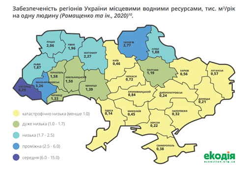

1.Основні фізичні та хімічні властивості води
Вода належить до найбільш поширених речовин на Земній кулі. Більшість запасів води на Землі
знаходяться в морях і океанах, прісна вода становить менше 1 %. Вода існує в атмосфері та на поверхні
різних
планет та інших небесних тіл Сонячної системи.
Фізичні властивості води. Чиста вода - безбарвна прозора рідина, без запаху і
смаку. За нормального атмосферного тиску при 0°С вона замерзає і перетворюється у лід, а при 100°С -
кипить,
перетворюючись у пару. У газоподібному стані вода існує і за нижчої температури, навіть нижче 0°С. Тому
лід
і сніг теж поступово випаровуються. У рідкому стані вода практично не стискається, при замерзанні
розширюється на 1/11 від свого об'єму. Найбільшу густину вода має при +4°С. Масу 1 см3 чистої води при
цій
температурі прийняли за одиницю і назвали грамом (сучасне визначення грама основане на точнішому
еталоні).
На відміну від інших рідин, вода при охолодженні від + 4 до 0°С розширюється. Тому лід легший від
води
(на 8%) і не тоне у ній. Завдяки цьому, а також малій теплопровідності шар льоду захищає глибокі водойми
від
промерзання до дна, і цим забезпечується у них життя. Потрійна точка води, тобто умови, за яких одночасно
у
рівноважному стані можуть співіснувати вода, лід та пара, реалізується при температурі 0,01 °C і тиску
611,73 Па. Значення 0,01 °C точне — на ньому основане визначення одиниці вимірювання температури в
Міжнародній системі (СІ), кельвіна. Вода характеризується великою питомою теплоємністю, що дорівнює за
означенням калорії 1 кал/г-град. Завдяки цьому температура океанів і морів змінюється досить повільно, і
цим
регулюється температура на поверхні земної кори. Цим пояснюється також те, що клімат на островах
рівномірніший, ніж на материках. Фізичні властивості води великою мірою зумовлені тим, що молекула води
має
значний дипольний момент (1,844 Дебая). Завдяки цьому молекули води сильно взаємодіють між собою, що
приводить до конденсації при доволі високій температурі. Так, наприклад, набагато важчі молекули кисню і
вуглекислого газу при цих температурах конденсованої фази не утворюють. Легкі атоми водню утворюють
водневі
зв'язки між різними молекулами, зумовлюючи складну взаємозв'язану структуру рідини.
Прозорість води. Чиста вода — прозора речовина з показником заломлення у
видимому
діапазоні 1,33. Вода, проте поглинає електромагнітні хвилі в інфрачервоній та ультрафіолетовій областях
спектру. Прозорість води залежить від товщини шару, через яку проходить світло, від кольоровості й
мутності
води, тобто від вмісту в ній різних барвистих завислих мінеральних і органічних речовин. Мірою прозорості
служить висота стовпа води, при якій можна спостерігати білий диск-прозоромір певних розмірів, що його
занурюють у воду, або розрізняти на білому папері стандартний шрифт певного розміру й типу. Результати
виражаються в сантиметрах із називанням способу вимірювання. За ступенем прозорості води поділяють на: 1)
прозорі; 2) слабко прозорі; 3) слабко каламутні; 4) каламутні; 5) сильно каламутні.
Хімічні властивості. До складу води входить гідроген і оксиген. Хімічна
формула
води Н2О. Молекули води дуже полярні. Тому вони можуть притягатися одна до одної своїми протилежними
полюсами і з'єднуватись у агрегати (Н2О)n. Внаслідок цього вода складається не тільки з простих молекул
Н2О,
а й агрегатів молекул (Н2О)2, (Н2О)3 і т. д. У хімічному відношенні вода досить активна. З багатьма
речовинами вона вступає в хімічні реакції вже при звичайній температурі. З оксидами лужних і
лужноземельних
металів вона утворює основи. З деякими солями вода утворює так звані кристалогідрати, які
характеризуються
строго визначеною кількістю молекул води, що припадають на одну молекулу солі. Наприклад, з сульфатом
міді
вода утворює мідний купорос, в якому на одну молекулу сульфату міді припадає п'ять молекул води. Воду, що
входить до складу кристалів, називають кристалізаційною.
Фізичні властивості води, їх аномальність. Вода - хімічна сполука двох атомів
водню і одного атома кисню Н2О. При утворенні молекули води кисень, який володіє сильною електровід’ємною
оболонкою із 6 електронів, змінює електричне поле атомів водню, узагальнює електрони водню. Утворюється
зв’язок, дуже подібний на ковалентний. Кисень стає при цьому ще більше електровід’ємним, а водень більше
електропозитивним. Тому молекула води полярна. Конфігурація молекули змінюється і величина дипольного
моменту, що безумовно драматично впливає на структуру води. З’єднання двох атомів водню з атомом кисню
приводять до виникнення аномальних властивостей, які проявляються на макрорівні, аномальних властивостей
рідини – води. Великий набір чудових властивостей, присутніх в воді, визначає наявність в її молекулярній
структурі великої кількості водневих зв’язків.
Аномалія густини. Всім відома аномалія густини. Вона двояка. По-перше, після
танення льоду густина збільшується, проходить через максимум при 4 оС і тільки потім зменшується з
зростанням температури. В звичайних рідинах густина завжди зменшується з температурою. І це зрозуміло.
Чим
більше температура, тим більше теплова швидкість молекул, тим сильніше вони розштовхують один одного,
приводячи до більшої рихлості речовини.
Аномалія стисливості. Ще один приклад аномалії води: незвичайна температурна
поведінка її стисливості, тобто ступені зменшення об'єму при збільшенні тиску . Звичайно стисливість
рідини
росте з температурою: при високих температурах рідини більш рихлі (мають меншу густину) і їх легше
стиснути.
Вода знаходить таку нормальну поведінку тільки при високих температурах. При низьких же стисливість
поводиться протилежним чином, в результаті чого в її температурній поведінці з'являється мінімум при 45С.
Поверхневе натягнення. Серед незвичайних властивостей води важко обійти увагою
ще
одне - її виключно високе поверхневе натягнення 0,073 Н/м. З всіх рідин більш високе поверхневе
натягнення
має тільки ртуть. Воно виявляється в тому, що вода постійно прагне стягнути, скоротити свою поверхню,
хоча
вона завжди приймає форму місткості, в якій знаходиться в даний момент. Вода лише здається безформною,
розтікаючись по будь-якій поверхні. Сила поверхневого натягнення примушує молекули її зовнішнього шаруючи
зчіплюватися, створюючи пружну зовнішню плівку.
Аномалія теплоємності. Що ж це за незвичайний процес, що відбувається в воді і
що
робить її несхожої на інші рідини? Щоб з'ясувати його фізичне єство розглянемо ще одну, на мій погляд,
найсильнішу аномалію води - температурна поведінка її теплоємності. Величина теплоємності, як відомо,
показує, скільки потрібно затрачувати тепло, щоб підняти температуру речовини на один градус. Для
переважної
кількості речовин теплоємність рідини після плавлення кристалу збільшується незначно - не більше 10%.
Інша
річ - вода. При плавленні льоду теплоємність скаче від 9 до 18 кал/моль "град, тобто в два рази! Такого
величезного стрибка теплоємності при плавленні не спостерігається у жодної іншої речовини: тут вода
абсолютний рекордсмен. Стрибок теплоємності після плавлення означає, що у воді відкриваються якісно нові
процеси (і дуже енергоємні), на які витрачається тепло і які обумовлюють появу надлишкової теплоємності.
Така надлишкова теплоємність і, отже, згадані енергоємні процеси існують у всьому діапазоні температур,
при
яких вода перебуває в рідкому стані. Вона зникає тільки в парі, тобто ця аномалія є властивістю саме
рідкого
стану води.
3. Вода – життя, а чиста вода - основа здоров’я
Вода – це найважливіша на нашій планеті рідина. У воді зароджується життя. Без неї неможливе існування
рослин і тварин. Життя є лише там, де є вода і, навпаки, де знаходиться вода, там є життя. Протягом життя
людина в середньому споживаєі, відповідно, виділяє приблизно 75 тоннводи. У рідкому середовищі відбуваються
процеси травлення і засвоєння організмом поживних речовин. Завдяки воді з організму виводяться шкідливі
продукти обміну – сеча, піт,а з ними шкідливі речовини і токсини.Вода очищає наше тіло зсередини так само,
як водяний струмінь змиває бруд зовні. Якість води, що використовується людиною для забезпечення її
життєдіяльності регламентується відповідними нормативними документами, такими як Закон України « Про питну
воду, питне водопостачання та водовідведення» від 10.01.2002 №2918-ІІІ, Державні санітарні норми і правила
«Гігієнічні вимоги до води питної, призначеної для споживання людиною» (ДСанПіН 2.2.4-171-10), згідно яких
вода за своїми органолептичними, фізико – хімічними та мікробіологічними показниками повинна відповідати
нормам. У той же час, питна вода, що надходить через водопровідну систему населенню не завжди відповідає
санітарно – гігієнічним вимогам, а від її якості хочеться сподіватись кращого. Поки вода дійде до споживачаз
місця, деїї видобувають, вона проходить через сотні кілометрів труб.З моменту надходження води в мережу її
якість та безпечність всіляко залежить від дотримання основних правил експлуатації водогонів, які через
певний термін експлуатації починають втрачати свої основні якості (міцність, безпечність, герметичність,
довговічність). Основним недоліком в експлуатації труб є утворення корозії. На швидкість та характер
утворення корозії впливає природний склад води. Під впливом присутності органічних та амонійних речовин у
воді в мережах можуть розвиватись залізобактерії, що призводить до появи на внутрішній частині труб
нерозчинного осаду гідроксиду заліза та їх заростання, внаслідок чого погіршується якість води (змінюються
та погіршуються органолептичні показники - каламутність, запах, смак та присмак, підвищується вміст заліза
загального). Це призводить до виникнення аварійних ситуацій, поривів водопровідних мереж та як наслідок
погіршення якості питної води.Вживання недоброякісної питної води негативно впливає
на здоров'я людини. Це може відбуватися як при вживанні води для пиття і приготування їжі, так і при
купанні та плаванні, заняттях водними видами спорту в такій воді. Природна вода може стати причиною ряду
захворювань, викликаних нестачею або надлишком у ній окремих хімічних елементів і сполук (йод, фтор,
марганець, магній та ін.). Вода річок та інших відкритих водойм може негативно вплинути на здоров'я
людини, якщо забруднена речовинами, що потрапили до неї з промисловими, побутовими,
сільськогосподарськими скидами, недостатньо очищена і знезаражена. З водою можуть передаватися
різноманітні інфекційні захворювання (вірусний гепатит А, ротовірусна інфекція, черевний тиф, паратифи,
дизентерія та інші кишкові інфекції), а також яйця гельмінтів, збудники протозойних захворювань.
Патогенні збудники можуть потрапляти у воду з різними нечистотами та відходами, тому безпека води в
епідемічному плані є однією з головних вимог. Оскільки вода є універсальним розчинником у ній
розчиняється безліч домішок на шляху проходження по системі водопостачання, тому перед вживанням воду
необхідно очищати. Для цього існують різні види фільтрів, а також є методики, як це можна робити вдома в
побутових умовах. Саме від якості води, яку ми п’ємо, залежить стан нашого здоров’я, якість нашого життя.
Вода варта того, щоб ми цікавились, що ми п’ємо і зробили все можливе, щоб ця вода була чистою, фізіологічно
повноцінноюта відповідала діючим вимогам державних санітарних правил.
Потрібно просто зрозуміти, що вода
– це одне з найбільших багатств, вічна цінність, до якої ми повинні відноситися з великою повагою, не
завдаючи їй шкоди та пильно оберігаючи. Пам’ятайте: вода – дзеркало минулого і сучасного.
4. Вода як джерело життя чи зародок війни: як крадіжка води окупантами впливає на
водозабезпеченість України і Криму
Вода — це найпоширеніший природний ресурс, тому часто виникає хибна думка про невичерпність і
загальнодоступність водних ресурсів. Проте це не так, адже придатної для споживання населенням і для
функціонування більшості земних екосистем прісної води зовсім небагато, її частка у загальних водних запасах
становить лише 2,53%.
Україна за показником забезпеченості водними ресурсами серед 20 європейських країн посідає аж 17 місце (за
даними 2014 р.). Прогнози на майбутнє теж не дуже оптимістичні, адже численні дослідження говорять про
значний негативний вплив зміни клімату на водні ресурси України. Дослідження свідчать, що у період 2031–2050
рр. зменшення водних ресурсів на півдні України може досягнути 60–70%, а на півночі – мінуc 30–40%. Понад те
– найменш забезпеченими водними ресурсами є Донбас, Криворіжжя, АР Крим та південні області України, де
також зосереджені найбільші споживачі води (промисловість і сільське господарство). Наразі якраз ці регіони
опинилися в зоні бойових дій та/або під контролем окупантів. Очевидно, що вже зараз війна, яку Росія
розв’язала в Україні, безпосередньо зачіпає і питання водної безпеки нашої країни. У цьому контексті водна
безпека трактується як розподіл води і водоємкої продукції, в якому не виникає загрози міжнародній
стабільності, водних війн, водного тероризму тощо.

Водні ресурси і військові дії
Війна, яку росія розпочала проти України ще у 2014 році, найбільше вплинула якраз на ті
регіони, де і до війни ситуація із водозабезпеченням була найгіршою. Зокрема, це стосується і Автономної
Республіки Крим, яка більшу частину води отримувала з материка – у середньому близько 85%. Через окупацію
Криму російськими військами водопостачання через Північно-Кримський канал було призупинено, адже міжнародне
гуманітарне право, яке захищає цивільне населення під час війни, зобов’язує окупанта забезпечувати потреби
людей на цих територіях. Очевидно, що за 8 років забезпечити Крим достатньою кількістю води росія так і не
спромоглася, що призвело до водної кризи в регіоні.
Насамперед це стосується катастрофічних наслідків для кримського сільського господарства (про
яке буде йтися окремо), але і населення та інфраструктура, яка забезпечує водну безпеку півострова, відчули
на собі наслідки. Обміління багатьох водосховищ, зокрема і Сімферопольського водосховища, спостерігалося ще
з перших років окупації. Але аномально теплий і посушливий зимово-весняний період 2020 року, який експерти
пов’язують із наслідками глобального потепління, загострив ситуацію і призвів до посухи в Україні. В Криму,
зокрема, з початку весни-2020 водосховища природного стоку були заповнені майже наполовину менше, ніж весною
2019-го, а на початок літа – у 2,3 раза менше, ніж у 2019-му. Як наслідок – восени 2020 року спостерігалися
численні перебої із водопостачанням та відключення води у багатьох регіонах Криму.
На додаток, через дефіцит води, особливо у степовій зоні Криму, окупанти почали розробку нових
і підвищення обсягів видобутку наявних підземних джерел. Наслідком цих дій стало швидке засолювання верхніх
пластів ґрунту, що призвело до ще більшого погіршення якості води та втрати цих земель для
сільськогосподарського використання. Враховуючи погіршення ситуації із водою на окупованих територіях,
Головне управління розвідки України відзначало, що одним із сценаріїв може бути військова операція збройних
сил рф із метою розв’язання проблеми водопостачання Криму. Іншими словами – «війна за воду» задля
розв’язання тієї проблеми, яка була штучно створена росією внаслідок окупації АР Крим.
24 лютого 2022 року росія розпочала повномасштабне вторгнення на територію Україні, атакувавши
міста майже по всій території країни. За повідомленнями прикордонників, територія Херсонської області була
обстріляна з ракетних систем залпового вогню, розміщених в Криму. Того ж дня на території Херсонської
області російські сили захопили головну споруду Північно-Кримського каналу, Каховську ГЕС і всі
гідротехнічні споруди, що регулювали водопостачання води з Каховського водосховища до півострова Крим. А 27
лютого окупанти зруйнували тимчасову дамбу, автомобільний міст та головну перегородкову споруду каналу. За
повідомленнями Держекоінспекції, російськими військами здійснювався водозабір із Каховського водосховища
через часткову розгерметизацію гідроспоруди Північно-Кримського каналу. Підрахунки ДЕІ вказують на те, що за
день окупанти крадуть води більше ніж на 32 млн гривень. Станом на 17 березня сума збитків за самовільне
використання водних ресурсів народу України вже склала 620 млн гривень.
Водночас експерти відмічають, що Північно-Кримський канал — це система гідротехнічних споруд, і
просто “пустити” ним воду недостатньо. Зокрема, коментуючи цю ситуацію, Директор Інституту водних проблем та
меліорації НАН України роз’яснював, що систему Північно-Кримського каналу на півострові потрібно ретельно
готувати до прийому води. Якщо ж вода потрапить у непідготовлений канал, це принесе більше шкоди, ніж
користі. Наразі повідомляється, що дніпровська вода дійсно пішла каналом, але дійшла лише до станції
накопичення, де потім насосами вона має перекачуватися на вищу територію. Експерти неодноразово
наголошували, що стан насосів може бути незадовільним після років простою, а на їхнє відновлення можуть піти
місяці. Водночас вже зараз відмічають, що через зношеність інфраструктури каналу та гідротехнічних споруд
вода, що поступає у канал, сильно замулена і її якість може бути дуже низькою. Таким чином зовсім не
обов’язково, що дніпровські води, захоплені росіянами внаслідок військової агресії, якось зможуть врятувати
ситуацію із водою на півострові. А от призвести до негативних наслідків як для природи, так і для населення
південних регіонів — цілком.
Забруднення води внаслідок військових дій
Міжнародні дослідження зазначають, що війни, починаючи з Першої Світової, чимдалі більше
впливають на екосистеми. Це пов’язано зі збільшенням потенціалу сучасної зброї, яка завдає більшої шкоди
навколишньому середовищу. Як приклади називають розлив нафти у водні ресурси Кувейту під час Перської війни,
або ж пошкодження каналізаційних ліній та очисних споруд в Ізраїлі під час війни у Лівані у 2006р., що
призвело до відкладання мулу у Середземному морі. Бойові дії можуть відбуватися на морських шляхах, або
ціллю військових операцій може стати водна інфраструктура (водопровідні труби, очисні споруди, дамби тощо).
Ці дії класифікуються як водний тероризм.
За місяць війни стратегічною ціллю окупантів стали нафтобази у Харкові, Чернігові Луганську,
Житомирі, Калинівці, Львові, Дубно, Луцьку та інші. Такі вибухи можуть призводити до забруднення як ґрунту,
так і водних ресурсів.
Війна, зрошення і сільське господарство
Сільське господарство невипадково згадується у частині дефіциту води у Криму.
Північно-Кримський канал був основним постачальником води з Дніпра до Криму.
До 2013 року у Криму з Північно-Кримського каналу використовувалися в аграрному секторі,
зокрема йшли на зрошення. Після перекриття Північно-Кримського каналу з 2013 по 2015 рік об’єм води, що
використовувався для зрошення зменшився у 40 разів, а площа зрошуваних земель — майже у 13 разів. Без води
Крим перетворюється на напівпустелю, де займатися сільським господарством просто невигідно. За роки окупації
споживання води на промисловість, питні та господарські потреби практично не змінилася, проте споживання
води сільським господарством значно скоротилася.
Чим ця інформація важлива для нас?
А тим, що спроби окупаційної влади відновити водопостачання в Крим можуть бути пов’язані зі
спробами використати цю воду на потреби місцевого сільського господарства. Тобто кількість споживання води
із Дніпра може кількократно зрости через потреби аграрного сектору. Вже зараз втрати (споживання води
окупантами) колосальні, а з повним відновленням постачання води в Крим без належної інфраструктури,
регулювання та контролю може принести серйозні негативні наслідки як для материкової частини України, так і
для півострова.
Крадіжка водних ресурсів під час війни та водний тероризм рф може спричинити різку зміну
водоспоживання по секторах. Тому важливо підходити до планування водозабезпечення південних регіонів
комплексно. Адже нераціональне використання води може призвести до посилення водного дефіциту.
Висновок
Вода — це цінний, але обмежений ресурс, особливо в південних і східних регіонах України. Воєнні
дії з боку окупантів погіршують ситуацію з водою в Україні. Експерти зазначають, що якщо нині одна з
основних глобальних проблем світу полягає в енергетичній безпеці, то в умовах зміни клімату на передній план
виходить як раз водна безпека. Закономірно, що новою глобальною тенденцією сучасного розвитку є перетворення
водних ресурсів на головні стратегічні ресурси, які дедалі частіше стають предметом міжнародних конфліктів,
збройних сутичок і навіть війн. На жаль, ця ситуація не оминула і Україну. Тому у майбутньому важливо
підходити до питання забезпечення водою південних і східних регіонів комплексно, враховуючи усі ризики — як
наслідки військової агресії рф, так і вплив зміни клімату.